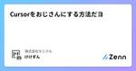
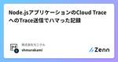

株式会社モニクルのフィード
https://zenn.dev/p/monicle
株式会社モニクルは、「金融の力で、安心を届ける。」をミッションとする金融サービステック企業です。金融の専門知識がなくても、正しい意思決定ができる社会へ。そのために必要なのは、人によるサービスとテクノロジーの掛け合わせ。既存のフィンテックとは異なる挑戦に取り組んでいます。
フィード

Cursorをおじさんにする方法だヨ✨ 14
14
株式会社モニクルのフィード
こんにちは、けけずんです。最近からCursorを使用して開発をしています。元々はVSCodeを使っていたのですが、CursorがVSCodeをベースに作られており拡張機能もそのまま利用できるということで、キーバインドに関してはやや不満はあるもののCursorに乗り換えました。Cursorを使用していると、Cursorから返ってくるメッセージは出力するトークンを最小限に抑え、且つユーザが理解しやすいよう要点を押さえた形式であることが分かります。しかし同時に、とても機械的だなと感じることも多々あります。例え相手がAIだとしても、親しみを持ちやすく前向きな気持ちになれるような対話をしたい...
8日前

Node.jsアプリケーションのCloud TraceへのTrace送信でハマった記録 1
株式会社モニクルのフィード
最近新しく作っているアプリケーションで、Cloud Traceへの送信でかなりハマったので、試行錯誤の記録を残します。 構成以下のようなシステム構成です。環境: Cloud Run Service言語/Runtime: Node.js v22Webサーバーフレームワーク: Fastify v5データベースライブラリ: drizzle-orm v0.42, pg 8.15関連ライブラリ: @opentelemetry/{api,core,sdk-node,sdk-trace-node}, @sentry/{node,opentelemetry}@9.5なお、 opente...
12日前

Homebrew + Colima + Docker 環境で docker build --check したい
株式会社モニクルのフィード
はじめにDocker Desktop のライセンス問題をトリガーに約2年前から表題の Colima を長く愛用しています。colima かわいいよ colimahttps://x.com/gabu/status/1604630523787513856話は変わって、少し前から GitHub で PR を見ている時に変更していない Dcokerfile に対してこんな Warning が表示されるようになりました。Preview と書いてあるので何か実験的にはじまったのでしょう。これを修正したいなーと思い調べると docker build --check で各ルールのチェック...
5ヶ月前
Sublime Mergeでキーバインディングを追加する方法
株式会社モニクルのフィード
!この記事はモニクル Advent Calendar 2024 19 日目の記事です。 Sublime MergeとはSublime Textを開発した会社が提供するGit GUIクライアントです。軽快な動作と、インタラクティブリベースの直感的な使いやすさが特に気に入っています。中でも、コミットの順序を入れ替える操作が簡単にできるため、コミットを整理する際にめちゃくちゃ使っています。 この記事は何？キーバインディングの設定方法は公式ドキュメントに記載されています。記法の方法自体は理解できますが、どんなコマンドが存在するのかはわからないため、そのままでは自分が欲しいキーバイ...
5ヶ月前
pg _floでPostgreSQLのCDCを検証する
株式会社モニクルのフィード
こんちには。この記事は モニクル Advent Calendar 2024 18日目の記事です。17日目は Cursor ComposerとCopilot Editsのよしなに力の比較 でした。そちらもどうぞ！昔の自分の記事を見たところ、アドベントカレンダーで記事を書くのが10年ぶりでした。pg_floというPostgreSQLのCDC(Change Data Capture)を行うツールを見つけたので検証してみ ました。https://github.com/pgflo/pg_flopg_floはPostgreSQL上で行われたデータの更新をレプリケーションしたり、JSON形...
5ヶ月前
Cursor ComposerとCopilot Editsのよしなに力の比較
株式会社モニクルのフィード
この記事は モニクル Advent Calendar 2024 の17日目の記事です。16日目はCloud RunからCloud SQLへIAM データベース認証で接続する でした。そちらもぜひ読んでみてください！ Cursor (Composer) vs Copilot EditsCursorのComposer（以下Cursor）とVS CodeのCopilot Edits（以下Copilot Edits）を比較していきます。モチベーションとしてはある程度細かく指示を出さずともよしなにやってくれることを期待します。また、Copilotの導入は進んでいてもCursorの利用事例...
5ヶ月前
Cloud RunからCloud SQLへIAM データベース認証で接続する
株式会社モニクルのフィード
この記事は モニクル Advent Calendar 2024 16 日目の記事です。15 日目は Excel で VBA を使わないでドラクエ 3 のパズルを作ってみた でした。VBA を使わずに Excel でゲームを作るシリーズ、とても面白いのでぜひ読んでみてください。 はじめにCloud SQL に接続する際にみなさんはどのような方法で接続していますか？筆者は最近までユーザー名とパスワードで接続する方法(組み込みデータベース認証[1])しか知りませんでした。Terraform でユーザーを作る場合、tfstate にパスワードが載ってしまうため秘匿情報をどうしようかと...
5ヶ月前
君もイカしたNeovimで開発してみなイカ？
株式会社モニクルのフィード
!この記事は モニクル Advent Calendar 2024 13日目の記事です。 Introduction昨年書いた以下の記事にてneovimのpluginがだいぶ省略されて終わっていたので、棚卸しを兼ねて現在使っているpluginとその設定内容を紹介していきたいと思います。 neovim keybinds前回の記事から操作性を良くするために以下を追加しました。-- 画面分割vim.keymap.set("n", "<S-j>", ":split<CR>")vim.keymap.set("n", "<S-l>", ":...
5ヶ月前
TypeScriptのコードをRustで書き直した話
株式会社モニクルのフィード
モニクル Advent Calendar 2024の12日目の記事です．https://adventar.org/calendars/10519 はじめにモニクルの開発組織では，TypeScriptをプロダクトを作るときの最初の選択肢として採用しており，Node.jsをランタイムとした一般的なJSの技術スタックでの開発を行っています．そんな中でNode.jsのパフォーマンスに課題を感じ始め，一部のコードをRustで書き直すという作業を行いました． Node.jsに感じた課題あらゆるサービスが稼働しているだけでお金を生み出してくれると良いのですが，残念ながら全てのサービスが...
5ヶ月前
【思い出】モニクルエンジニアの2024年 振り返りと感想
株式会社モニクルのフィード
📌 この記事はモニクルAdventCalendar2024の11日目の記事です。https://adventar.org/calendars/10519こんにちは！モニクルのエンジニアの久慈です。この記事では、私が2024年に触っていた技術やツール、tipsなどで印象に残っていることをざっくりと振り返り、最後に今年の感想を書いていこうと思います。 2024年 振り返り 技術 フロントエンド JS/TS書いた記事https://zenn.dev/monicle/articles/4ff248e825f26dhttps://zenn.dev/monicle/a...
5ヶ月前
[小ネタ]Slack Platform（Deno）で作成したインシデント対応botにリマインダー機能を追加した
株式会社モニクルのフィード
はじめに株式会社モニクルでSREを担当しているbeaverjrです。この記事はSRE Advent Calendar 2024の10日目の記事です。弊社SREチームでは、Slack次世代プラットフォーム（next generation Slack platform）を活用して、インシデント対応の標準化を目指すSlackbotを作成しました。https://zenn.dev/monicle/articles/b3173ccbaa41a1今回はそのbotに追加したリマインダー機能についてご紹介します。 背景インシデント発生時に作成された対応用のチャンネル（WarRoom）...
5ヶ月前
Grazieさわってみた
株式会社モニクルのフィード
この記事はモニクルAdvent Calendar 2024の9日目です。唐突ですが、Grazieの紹介とさわった感想を書きたいと思います。 GrazieとはGrazieは、JetBrainsが提供する技術的な文章の書くのを助けるAIアシスタントです。公式サイトは以下のリンク先です。https://www.jetbrains.com/grazie/以下のようなことができます。文章の校正文脈に沿ったAIチャット要約文章の提案翻訳文章の言い換えやトーンの調整使用方法ですが、JetBrainsのIDE上で使ったり、ブラウザ上で拡張機能として使ったりできます。私は...
5ヶ月前
SharePointを社内のファイルサーバーとして考えてみる
株式会社モニクルのフィード
こんにちは、モニクルでコーポレートエンジニアをしているわったんです。この記事はモニクルAdvent Calendar 2024の8日目です。昨日の記事は、 軽井沢に一軒家を建てたので、学びを振り返ってみる でした。軽井沢で土地を探すところから始めて一軒家を立てるなんて憧れます。https://note.com/toshimitsu_t/n/nddc92d6bcfd6?sub_rt=share_pb はじめにオンプレミス型ファイルサーバーは長年にわたって業務の基盤として活用されてきましたが、時代の変化や業務スタイルの多様化でクラウドストレージを利用する企業がかなり増えたと思います...
5ヶ月前
SREチームのロードマップを作った話
株式会社モニクルのフィード
はじめに株式会社モニクルでSREをしているbeaverjrです。この記事はモニクルAdvent Calendar 2024の6日目の記事です。今回は、弊社のSREチームのロードマップを作成した背景や、作成にあたって意識したことをまとめました。 なぜロードマップを作成したかSREチームでは、これからチームとしてどうしていくか、という具体的な中長期における計画は立てておらず、方向性が漠然としている状態でした。また、弊社のSREチームは未経験からスタートしたチームであり、1年と少しが過ぎて徐々にSREとしての考え方や業務の進め方に慣れてきたところでした。このタイミングで、改め...
5ヶ月前
Deno 2.1でWasmをimportできるようになったらしい
株式会社モニクルのフィード
WebAssembly Advent Calendar 2024の5日目の記事になります．https://qiita.com/advent-calendar/2024/wasm先月，Deno 2.1がリリースされ，Wasmを直接importできるようになりました．Deno 2.1: Wasm Imports and other enhancementshttps://deno.com/blog/v2.1 従来のWasmサポートDenoは今までもWasmをサポートしてきました．例えば次のようなWATファイルを用意します．このWATファイルは，ポインタと文字列長を受け取るc...
5ヶ月前
Figma の variables を Design Tokens Community Group の形式で出力するプラグインが欲しい
株式会社モニクルのフィード
株式会社モニクルで開発している togana です。この記事は モニクル Advent Calendar 2024の5日目の記事です。 はじめにFigma を使っていると、デザインと実装を統一するためにデータを出力して活用したいと思うことがあります。特に、Variables の情報を Design Tokens Community Group（以下、DTCG）の形式で出力できるプラグインがあれば便利だと思い、探してみました。しかし、欲しい形式を出力できるプラグインが見つからなかったので、自作することにしました。 まずは作り方以下の記事で詳しく解説されているので、こちらを参考...
5ヶ月前
2024年記憶に残ったインシデント2選
株式会社モニクルのフィード
こんにちは、モニクルでエンジニアリングマネージャーをやっているka2nです。この記事は モニクル Advent Calendar 2024の4日目の記事です。 昨日は、@sugoi-wadaの 禅と暮らす一週間。一日一食断食と仏教体験レポート 準備編 2024 年秋 - wada-blog でした。 修行と言えば私もやったことがあります。またやりたいな。https://scrapbox.io/wada-blog/禅と暮らす一週間。一日一食断食と仏教体験レポート_準備編_2024年秋 はじめにモニクルでは、マネイロ をはじめ、「金融の専門知識がなくても、正しい意思決定ができる人を...
5ヶ月前
開発合宿と技術同人誌即売会への企業出展にシナジーを見出した話
株式会社モニクルのフィード
こんにちは、なかざんです。この記事はモニクルAdvent Calendar 2024の2日目です。昨日はgabuの39歳のリアルでした。https://gabu.hatenablog.com/entry/startup-and-life-39engineer はじめにさて、開発組織を運営する目的の本筋は、開発という行為によって事業に貢献することですよね。「売上は全てを癒す」という格言もあるくらいなので、売上を立てるために事業に貢献するよりも大事なことはなかなかないでしょう。とはいっても、ビジネスの方向だけを向き続けていれば組織が回るかというと、そういうわけでもありません。開発組...
5ヶ月前
Go1.24からWasmで使える型が緩和される話
株式会社モニクルのフィード
WebAssembly Advent Calendar 2024の1日目の記事になります．先月(11月2日)から行われていた技術書典17にて，WebAssembly Cookbook vol.2[1] (新刊)を配布しました．https://techbookfest.org/product/7CHqqtaeaRYrwDwQNCX0T7Cookbook vol.2の第1章では，Go1.24から新しくサポートされるgo:wasmexportディレクティブについて紹介しています．go:wasmexportディレクティブがサポートされることで，Pure GoでもWASI 0.1のリアクタ...
5ヶ月前
スクラム理解度クイズやってみた！
株式会社モニクルのフィード
どのクイズ？僕の所属している開発チームのスクラムマスターが突然、スクラムのクイズをやってみよう！と言い出してくださり、こちらの初心者向けスクラム理解度クイズをやってみました。僕の成績は30問中22問正解であり、8問間違っていました。その間違っていた問題を振り返りがてら軽くまとめてみようと思います。 間違えた問題・学びQ2正解：オリファインメントはスクラムのイベントではありません。スクラムガイドでは、スプリントプランニング、デイリースクラム、スプリントレビュー、スプリントレトロスペクティブが公式イベントとされています。リファインメントはこれらには含まれず、柔軟にチー...
7ヶ月前